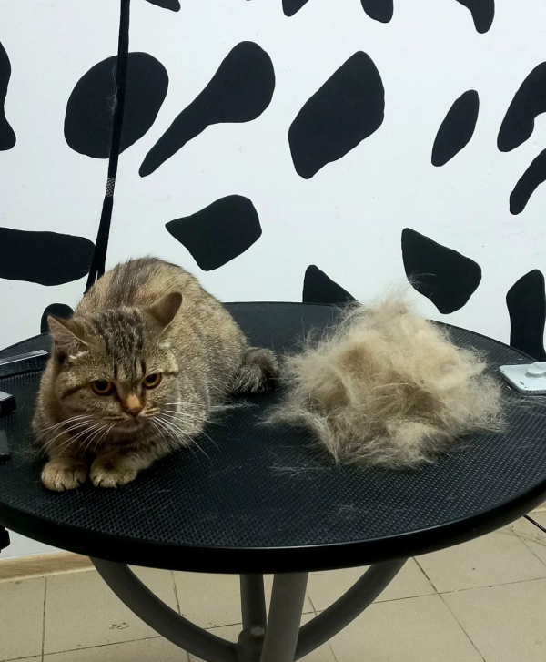

Наші вихованці як наші діти – вимагають постійної уваги і догляду. Коти і кішки не виняток. Хороший і правильний догляд за котом – це не тільки смачненько погодувати і прибрати лоток. Як і всі живі істоти, коти схильні до хвороб, в тому числі і шкірних. І не варто забувати, що такі неприємні істоти, як паразити, теж люблять наших вихованців, але по-своєму. І, краще все-таки, не допускати паразитів до наших братів менших або, принаймні, вчасно від цих самих паразитів позбавлятися! У цьому нам дуже сильно може допомогти стрижка кота. Давайте ж розберемося в яких випадках стрижка вашого кота дійсно необхідна, як підстригти кота в салоні, і як підстригти кота вдома.

Як підстригти кота
Що варто знати
Коли стрижка кота необхідна?

Густа шерсть - це дуже красиво, але, якщо вона занадто густа і до того ж дуже щільна до чого це може привести? Справа в тому, що кішки погано адаптовані до умов жаркого клімату. Більшість котячих погано виводять зайве тепло. І в таких умовах густа і щільна шерсть з підшерстям стає справжньою проблемою. Якщо, в жарку пору року, у вас немає можливості знизити температуру навколишнього середовища, то кращим рішенням буде підстригти кота!
Довга шерсть - так само є гідністю. Але, всі ми знаємо як кішки люблять за собою доглядати, постійно вмиваються і вилизують себе. При цьому відбувається заковтування вовни, яка надалі утворює вовняні кульки в шлунково-кишковому тракті тварини. Накопичуючись, вони призводять до подразнення шлунково-кишкового тракту, що в кращому випадку провокує блювоту в гіршому може привести до закупорки кишечника.
Ковтуни - тут вже немає нічого красивого. Якщо за шерстю тварини немає нормального догляду, а вона досить довга, це може привести до утворення ковтунів – грудочок шерсті що сплуталася і звалялася. Розплутати їх нереально (у всякому разі без спеціальних засобів). І тут правильним рішенням буде стрижка кота. Якщо ковтунів трохи, можна провести процедуру локально, якщо ж навпаки – повна стрижка з подальшим (по мірі відростання), прочісуванням вовни.
Наступна неприємна проблема - хвороба кота. Під час лікування може знадобиться доступ до локальних ділянок шкіри. Наприклад, коли лікування проводиться препаратами зовнішнього застосування. В такому випадку густа шерсть – тільки перешкода до правильного нанесення препарату. Те ж можна сказати і в разі планованої операції, коли місце проведення операції має бути очищено від вовни.
Так само потрібно сказати про проблему не стільки котів, скільки господарів – алергія у господаря кота. Якщо шерсть тварини провокує алергію, стрижка необхідна. Хоча, зазвичай, люди з алергією намагаються заводити короткошерстих або безшерстих котів.
Стрижка кота в салоні
Чим хороша стрижка кота в салоні:
Професійний перукар для котів знає, як потрібно правильно поводитися з твариною. У разі, коли кішка буде категорично проти процедури, майстер зможе застосувати заспокійливе або наркоз.
Під час проведення стрижки грумер (перукар) зможе розповісти вам про наявність проблем з шерстю або шкірою вашого вихованця, якщо такі будуть мати місце.
Модельні стрижки, стрижки перед виставкою з урахуванням вимог породи зможе зробити тільки хороший професіонал.
Єдиний мінус салонної стрижки - за неї доведеться заплатити. У нашому салоні «101 далматинець» вартість даної послуги – від 400 грн.
Як підстригти кота в домашніх умовах
Стрижка кота не саме легке і веселе заняття. Якщо ви зважилися самостійно провести цю процедуру, вам краще запросити до себе пару помічників. І краще, що б хто-небудь з них умів це робити. Вам знадобиться:
-
Стіл - бажано покрити його м'якою тканиною (можна використовувати, в якості імпровізованого столу, прасувальну дошку)
-
Ножиці (в ідеалі прості і для філірування)
-
Гребінець (краще використовувати той, яким ви зазвичай вичісуєте вихованця - звичні речі будуть заспокоювати)
-
Перекис водню (3%-ва підійде)
-
Вата
Кота необхідно укласти на стіл, а помічники нехай міцно тримають його за лапи. Спочатку акуратно проходимо спинку, голову стригти не треба - це може нашкодити, потім живіт, потім лапи і в кінці хвіст. Обов'язково розтягувати всі складочки шкіри, щоб не поранити. Якщо це сталося – обробити перекисом. Після того як процедура буде закінчена треба викупати тварину.
Висновок
Якщо причини, за якими стрижка кота необхідна, до вас і вашого вихованця не відносяться, то стрижка необов'язкова, але можлива. І рішення тут приймати вам. Занадто часто цією процедурою захоплюватися не варто. Більш детальну інформацію ви можете отримати, записавшись на консультацію в салон "101 далматинець" тут або зателефонувавши за телефоном +38(050)339-1000.
Якщо рішення про стрижку вихованця прийнято, і воно позитивне варто подумати про те чи зможете ви зробити це самостійно або зверніться до професіоналів. У другому випадку можна записатися на процедуру тут.
Наша адреса:
Грумінг-салон
"101 ДАЛМАТИНЕЦЬ"
Грумінг-салон
"101 ДАЛМАТИНЕЦЬ"
м.Івано-Франківськ,
вул.Гетьмана Мазепи, 20/8 (сквер П'ятниця)

Графік роботи
Понеділок: 10.00 - 21.00
Вівторок: 10.00 - 21.00
Середа: 10.00 - 21.00
Четвер: 10.00 - 21.00
П'ятниця: 10.00 - 21.00
Субота: 10.00 - 21.00
Неділля: 10.00 - 21.00